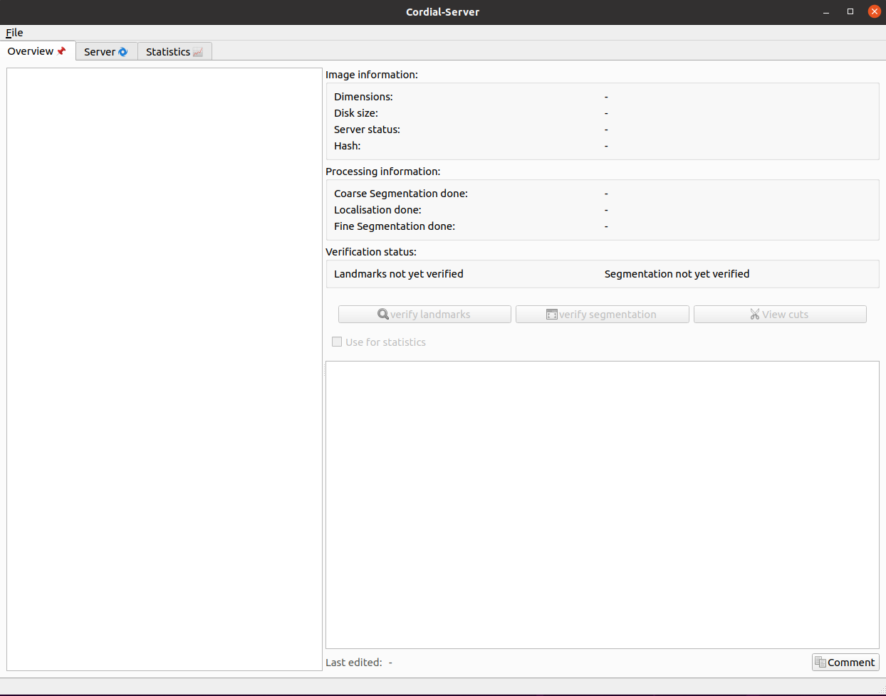
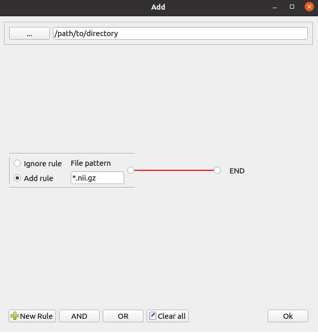
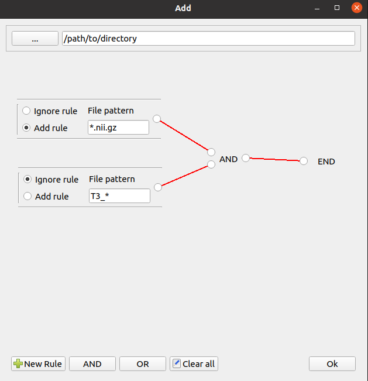
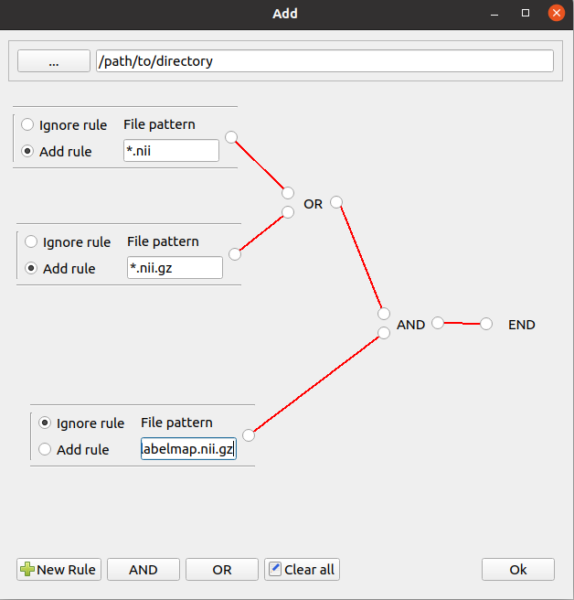
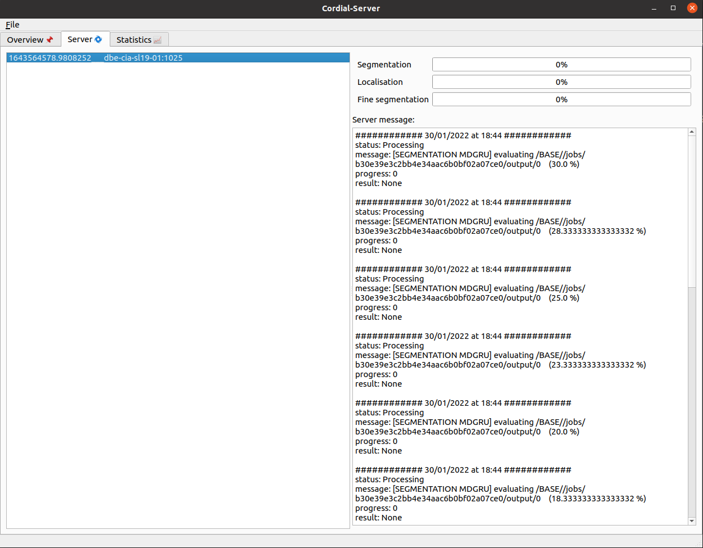

When firing up Cordial 2, the user is greeted with the Widget shown below in Fig. 1. It is comprised of three tabs (Overview, Server and Statistics) and a menu bar called File.

Fig.1 The main widget.
Loading file(s) to Cordial 2
The first thing the user should do when opening Cordial 2 is loading one or more files into the current session.
There are three diferent ways of doing this.
First, one can load a previous session (File -> load session), this will load all the files and connections from such session. By default these are saved under /home/username/CORDIAL-SERVER/sessions.
One can also load single nifti files to (File -> load session).
Finally, many nifti files can be loaded at once with the load directory (File -> load session).
This option opens another widget, called "Add". Rules made up of filenames and/or wildcards must glued together in a graph so that the matching files and subfiles of the chosen directory are loaded. The wildcard symbol is the asterisk *.
Here are some examples.

Load all files ending in ".nii.gz" .

Load all files ending in ".nii.gz", except those that start with "T3_" .

Load all files ending in ".nii" or ".nii.gz", but ignore those those that are called "labelmap.nii.gz".
Managing loaded files
Once files are loaded, they can be marked as favorites, viewd in MRIcron, removed from the list, or pushed to the server.
The former three can be done by done by right clicking a file in the tree view. Note that if a directory is right clicked, then there is the possibility of removing
all of its contents from the current session directly.
Pushing files to the server is done by clicking File (from the menu bar) and then "Push files to server", there it can be decided which files are processed (all files, only favorites, or all files except for favorites).
When pushing files to the server, it is also possible to choose whether to automatically assign a GPU index, or to enter it manually, and this feature used to cause a bug, so for the moment a GPU will be assgined automatically regardless of what option is chosen.
The server tab
Each time files are pushed to the queue, a server connection is added to the session, which can be shown in the server tab.
Server connections can and should be saved by using File File -> save session.
To watch the progress of a segmentation connection, click on one and wait a few seconds for a server response. The picture below shows an example of a server connection running.

The server tab, showing the progress of the current connection.
The statistics tab
Files that are already segmented and verified can be used for statiscal evaluations by checking the 'use for statistics' checkbox. First, it is necessary to run the U step (File -> run u evaluation).
Then, the proper value for the distance from above variable must be given, it is possible to click on the plot to set this automatically.
Afer that has been done, the V step may begin (File -> run v evaluation). Now the variable segmentation length must be set, like in the previous step this can be done by clicking on the plot. Finally, the evaluations are computed when "run" is clicked.
In summary, it is necessary to run these steps in sequence: